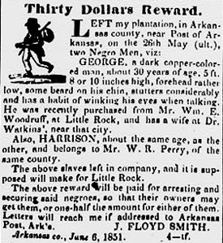
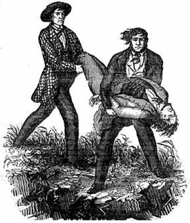

|
In 1717 Louis XIV granted financier John Law a vast concession of North American
land, including the geographical boundaries of the modern state of Arkansas. Law
settled some two thousand Germans and an unknown number of black slaves near the
Post of Arkansas. During this pre-Black Code period (pre-1722), slaveholdings
were small and living conditions primitive. In 1771 the entire district
contained only thirty-eight white males, thirty white females, nine black males,
and seven black females. The blacks appear to have been associated either with
the post's business activities or with some facet of agriculture. The post had
at least one slave blacksmith. Population in Arkansas increased during the
revolutionary war, and more Americans, mostly hunters, continued to enter the
region prior to the Louisiana Purchase. By 1803 the post contained 874
inhabitants, including 107 slaves and two "free persons of color."
In 1819, after a heated debate over slavery presaging the Missouri struggle,
Congress established the Arkansas Territory. Although Methodists in the
territory objected to the peculiar institution, by the late 1830s Arkansas had
emerged as a society committed to slavery. For example, in 1830 the Arkansas
Gazette refused to print a letter critical of slavery, citing possible
"mischievous consequences." Six years later, when statehood was debated, one
critic of slavery complained that the need to protect slave property would
result in higher taxes for slaveholders and non-slaveholders alike. But the
majority agreed that Arkansas's growth rested on luring more slaveholders. As a
result, the state's 1836 constitution guaranteed slavery, but permitted
emancipation with consent of the owners and guaranteed slaves access to the
courts. It further directed equality of punishment of slaves with whites.
Slavery in Arkansas grew slowly and erratically, tied inextricably to the
state's haphazard economic development. Not all sections of the state grew at
the same time. The Ozark and Ouachita mountain areas developed first. There
subsistence farming remained more common than commercial agriculture. Southwest
Arkansas's growth was delayed until the opening of the Red River raft in 1838.
Plantations developed along all the major rivers, but only Chicot County, in the
extreme southeast, matched the richest planting districts of Mississippi or
Louisiana. In the eastern counties of Arkansas, where only 10 percent of the
land was farmable, expensive levee and drainage projects were needed. Their
absence impeded slavery's expansion.
Nevertheless, the yeomen farmers who settled Arkansas brought family slaves with
them into the state. In 1830 the upland yeomanry owned 61 percent of Arkansas's
slaves. With each successive enumeration that percentage (but not the actual
numbers) declined, so that by 1860, 74 percent of the state's slaves lived in
the lowlands. Numbers of slaves in 1860 ranged from Newton County's twenty-four
slaves to Chicot County's 7,512 slaves. Eighty percent of the latter county's
population was composed of blacks. In 1860 Arkansas ranked twelfth among the
fifteen slave states with 111,115 slaves. The plantation system never became
well established there. Grandiose plantation houses were virtually nonexistent.
Planters (slaveholders owning more than twenty slaves) accounted for only 1,363
of the state's 11,481 slave owners. Most were relative newcomers to Arkansas,
only in their first or second generation of settlement.
Several factors worked to keep Arkansas's slave population low. Isolated and
frontier-like throughout the antebellum period, Arkansas lacked adequate banking
and transportation facilities. Its rivers and streams overflowed regularly,
contributing to very unhealthy conditions especially in the lowlands. Blacks,
exposed to harder working conditions and concentrated in the lowlands, displayed
a higher death rate of 1.8 percent compared to 1.32 percent for whites. And the
slaves' birthrate, 2.4 percent, compared unfavorably to that of 3.5 percent for
whites.
The paucity of bondsmen in Arkansas kept both slave prices and demand for slaves
artificially high. Most farmers and planters started with a low initial
investment in slaves and remained active in the marketplace. The rising prices
slaves commanded in Arkansas limited opportunity and fostered a spirit of
speculation. In 1820 the average value of a bondsman stood at $380. By 1840 the
value had risen to $484, and by 1861 a figure of $881 had been reached. A prime
young carpenter in early 1860 was inventoried at $2,800. Although the 1836
constitution authorized the legislature to ban the importation of slaves for
speculative purposes, no implementing legislation followed. Lacking an organized
slave trade in the state, planters used slave trading facilities available at
Memphis or New Orleans. In 1836 Little Rock boasted an "Auction Mart" that
included slaves among the consigned items. A vigorous local swapping always
existed in lands, horses, cattle, and slaves. These transactions often involved
dealings with the Indian nations to the west. Agitation for reopening the slave
trade became a part of Arkansans' political rhetoric in 1860.
Arkansas's slave laws were shaped to fit a society along the southwestern
frontier. The ruling class was careful to guard its slave property because,
according to English traveler G. W. Featherstonhaugh, Arkansas was a haven for
"all sorts of 'negur runners,' 'counterfeiters,' 'horse stealers,' 'murderers
and such like.'" Much of the slave legislation was aimed at restricting
manumission. The 1836 constitution, for example, placed two restrictions on the
slaveholder granting freedom to his slaves. The first preserved the rights of
creditors and the second prevented the setting free of elderly or sick bondsmen.
To discourage free blacks, one law required every county so "damnified by such
negro or mulatto" to collect from each a $500 bond. In 1843 another statute
prohibited free blacks from immigrating to Arkansas. After the Dred Scott
decision excluded blacks from American citizenship, the Arkansas legislature
enacted an expulsion law giving free blacks thirty days to emigrate or be
re-enslaved. The 1860 census, taken after the new law supposedly went into
effect, still showed 144 free blacks. By 1861, when Arkansas framed a new
constitution, the notion that slavery should endure forever was so strongly
entrenched that owners were denied the right to free their slaves under any
circumstances.
|

An advertisement for a runaway Arkansas slave
|
Nevertheless, evidence suggests that Arkansans did free slaves prior to 1861.
For example, John Latta of Washington County emancipated his slaves at his
death, and not to be inhumane, provided for them by leaving each a bequest of
$2,500. James W. Mason, the black son of planter Cyrus Worthington, was sent
north to school. And because freedom was often specified in wills, it is not
surprising that disgruntled heirs went to court. In an 1860 case, Judge H. F.
Fairchild admitted the courts once tended to "lean towards the grant of
freedom." But they would do so no longer. As a result, the courts refused to
enforce an agreement that had permitted a bondsman to earn his freedom. In
another case the judge set aside a will under whose terms free blacks would have
inherited slaves. "The ownership of slave[s] by free Negroes is directly opposed
to the principles upon which slavery exists among us," wrote Judge F. W. Compton
in 1859. The most grisly slave case in Arkansas judicial records, Pyeatt v.
Spencer (1842), concerned a young woman whose owner staked her to the
ground, whipped her until she bled, and then rubbed salt into the wounds.
Despite legal hostility, some free blacks nonetheless prospered. Nathan Warren,
who worked as a barber and carriage driver, established himself in Little Rock
as a pastry cook for social events. In time he was able to buy the freedom of
one of his brothers. In Jackson County, Daniel Earls, freed in 1827, acquired
350 acres and the public franchise for a White River ferry. He redeemed his wife
and children prior to his death in 1849. In remote Marion County, several blacks
acquired estates worth over a thousand dollars. Perhaps the most unusual record
of free black activity came from Washington County. In 1834 Elizah Williams, "a
free man of color," is identified there on a legal document as "my true and
lawful attorney." i
Most Arkansas blacks were enslaved, not free blacks. The conditions of slave
life tended to be harder in Arkansas than in older areas, primarily because of
the extra duties involved in clearing frontier land for cotton cultivation.
Slave quarters for Arkansas slaves consisted primarily of log cabins, each
housing an average of 5.74 persons. This compared closely to the average for the
total population average of 5.72. Slave diet consisted largely of cornbread,
molasses, and pork. One plantation owner reported employing a hunter full-time,
although slaves commonly fished and hunted. Arkansas bondsmen dressed in the
manner of most Southern slaves. Early illustrations show Arkansas slave women
wearing cloth wrapped around their heads in an African style. By contrast, in
1854 traveler Ida Pfeiffer observed an Arkansas slave ball where the men dressed
in black with white neck-cloths and waistcoats. The slave women wore white
dresses.
The small size of most Arkansas slaveholdings resulted in many marriages of
bondsmen on distant farms and plantations. This increased the danger of family
separation. Slave weddings generally were informal in character, although
occasional church weddings were reported. Sexual relations between the races
were not uncommon in Arkansas, and the 1850 census classified 15.61 percent of
Arkansas's slaves as mulattoes. In one unusual court case (1858), the judge
reasoned that it must have taken "at least twenty generations for the black
blood to be as white as the complainant," who nevertheless remained a slave. In
Inside Views of Slavery on Southern Plantations (1864), abolitionist John
Roles recounted the flagrant sexual exploitation of a slave cook from Fort
Smith.
Unfortunately, little is known of the religious lives of Arkansas bondsmen. One
missionary, Bishop Henry C. Lay, encountered communicants among black cotton
factory hands in Pike County who, "although ignorant of the church ... knew the
Creed by transmission from their fathers." Although, in 1853, Arkansas
Methodists claimed 2,897 black and 15,665 white members, the majority of blacks
were Baptists. As one black minister allegedly asserted, "If you see a nigger
who ain't a Baptist, you know some white man has been triggerin' witt him."
While other denominations often set aside galleries for the use of slaves,
Baptists insisted upon separate facilities. One ex-slave remembered a white
minister who preached two sermons simultaneously--one to the whites in the
church, and the other to the blacks through an open window. Christian theology
aimed at the slaves invariably reinforced the tenets of white supremacy.
"Servants obey your masters" was the frequent message, prompting an ex-slave to
quip: "Same old thing, all the time." Lest slaves get the idea that religion
would bring them freedom, in 1859 the Arkansas Baptist published a homily
for masters to impress upon the bondsmen slavery's divine origins.
Open slave revolts were reported in Arkansas, and rumors of insurrections ran
rampant throughout the 1850s. The state's slave patrol constituted "a slumbering
power," one that justified every manner of extralegal justice and vigilante
behavior. Slave treatment was most severe on absentee plantations along the Red
River. But the most common form of slave resistance was running away. The most
publicized bid for freedom came from Fayetteville butler Nelson Hacket, who in
1840 escaped on a stolen race horse. Tracked to Canada, he ultimately was
extradited back to Arkansas. Some slave escapes comprised part of organized
crime. And the hysteria surrounding the John Murrell gang activities in the
1830s prompted mob violence by whites. Little Rock, with only 3,700 residents,
suffered from some of the discipline problems endemic to slavery in cities
throughout the South. Fear of slave rebellion there in 1856 prompted an
ordinance prohibiting slaves from living "separately and to themselves."
|

An artist's depiction of the Murrell gang
in action
|
The Civil War brought about a gradual end to slavery in Arkansas. Although no
slave uprisings were reported, the plantation system collapsed as federal armies
penetrated the state. Some eastern planters tried sequestering slaves in
canebrakes, where they were "found invariably through bad faith of some of the
negroes." Others relocated hands to remote and safer lands. Some planters hired
slaves to the Confederate government, and after August 1862, formal impressment
of slaves by the Confederacy began. Bondsmen hired to the government tended to
be employed in the towns. Wartime Little Rock, for example, experienced a large
slave population growth. And because owners could not control their slaves from
afar, problems of control ensued. By 1863 slaves were reported to be hiring
their own time, renting houses for prostitution, selling illegal liquor, and
buying horses and firearms. Masters charged the Confederate government not only
with failing to discipline their bondsmen but also with failing to provide
slaves with proper food or medical care. As a result, many planters hid their
bondsmen in Texas. By one estimate 150,000 slaves passed r through Arkansas to
Texas during the war.
The many slaves who followed the Union army were quickly put to work building
fortifications. Some, poorly fed and housed and also abused by Union troops,
returned to the plantations. By 1863 the Union armies had stripped Arkansas
farms of most able-bodied bondsmen, leaving very young and old slaves for the
Confederacy to feed. Slaves now "hide from us like the dickins," one Union
soldier reported in 1863. Late in the war the federal army began arming Arkansas
slaves. Eventually 5,000 black Arkansans served in the U.S. Colored Troops.
Confederates reacted violently to their blacks in Yankee uniforms. At the Battle
of Poison Springs (1864), the Confederates took few prisoners, and drivers ran
wagon wheels over the skulls of the dead. General Patrick R. Cleburne, a native
of Arkansas, first proposed that the Confederacy recruit and arm blacks.
Cleburne's proposal was greeted by a storm of opposition and the charge of
treason. Late in the war the questions of arming and emancipating the slaves
were widely debated in the Trans-Mississippi Department. In 1865 the last
Confederate newspaper in Arkansas, the Washington Telegraph, asserted that "We
owe it to God to sustain" slavery. But common soldiers were far less
enthusiastic. The Confederacy's "twenty nigger" law, under which planters' sons
often escaped military service, generated much dissension among Arkansas's
dominant yeomen class.
The war brought an end to slavery, but not at one time or in one place. In areas
of Union occupation wage labor appeared immediately, and leased plantations were
established. As a judge during Reconstruction observed, "None questions the fact
that all slaves in the State have been emancipated and forever made free, but
lawyers and courts do not so well agree as to the sovereign act which gave them
freedom." Questions of civil rights, the status of slave marriages, and the
validity of antebellum slave purchase contracts were debated in Arkansas courts
as late as the 1950s. Post-Civil War racial repression--the convict lease and
debt peonage systems, and the Elaine race riot of 1919--served as bitter
reminders of slavery to black Arkansas.
Source: Randall M. Miller and John David Smith, eds. Dictionary of
Afro-American Slavery (Westport, CT: Praeger, 1997), 59-64.
|